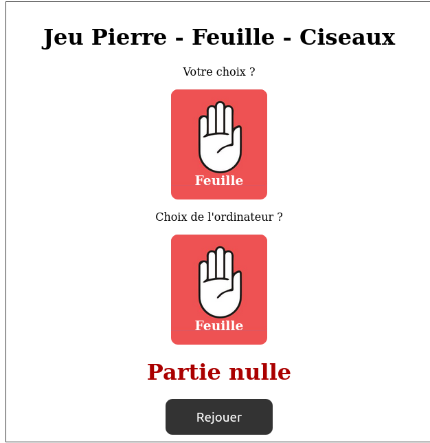

// Numéro du gagnant d'une partie
let g = -1; // -1 : partie non terminée - 0 : partie nulle
// 1 : vous gagnez - 2 : vous perdez
// Les 3 boutons utilisateur
const userBtns = document.querySelectorAll("à compléter");
// Le bouton réservé à l'ordinateur
const compBtn = document.querySelector("à compléter");
// Le div réservé au résultat
const resultat = document.querySelector("à compléter");
// Le bouton rejouer
const rejouer = document.querySelector("à compléter");
// Les éléments du jeu
const classes = ['pierre', 'feuille', 'ciseaux'];
const gagnants = ["Partie nulle", "Vous avez gagné!", "Vous avez perdu!"];
Travail Demandé
Compléter le script ci-dessus. Les champs marqués "à compléter".
Cliquer sur les boutons. Que font-t-ils ?
Ajouter les gestionnaires d'évènement onclick pour les trois boutons utilisateur.
Ajouter le gestionnaire d'évènement onclick pour le bouton rejouer.
Cacher initialement le bouton rejouer
Pierre-Feuille-Ciseaux - Gagnant
Copier/Coller le code suivant dans le gestionnaire d'évènement onclick des boutons utilisateur :
const j1 = 0; // Numéro du bouton cliqué par l'utilisateur
const j2 = 1; // L'ordinateur sélectionne un numéro entre 0 et 2 au hasard
compBtn.className = classes[j2];
g = 2; // calculer le numéro du gagnant
// 0 : partie nulle
// Afficher le gagnant et le bouton rejouer
resultat.textContent = gagnants[g];
rejouer.style.display = "";
Travail Demandé
Récupérer le numéro du bouton appuyé par l'utilisateur dans la constante j1.
Sélectionner un nombre au hasard entre 0 et 2, c'est le choix de l'ordinateur, constante j2.
Calculer le numéro du gagnant puis l'affecter à la variable g :
0 : Partie nulle
1 : L'utilisateur gagne
2 : L'ordinateur gagne
Pierre-Feuille-Ciseaux - perfectionnement
Améliorer votre jeu.
Travail Demande
Le clic sur le bouton rejouer doit réinitialiser le jeu.
Le clic sur le bouton rejouer doit faire disparaitre ce même bouton.
Le clic sur l'un des boutons utilisateur fait disparaitre les autres qui n'ont pas été cliqué.
